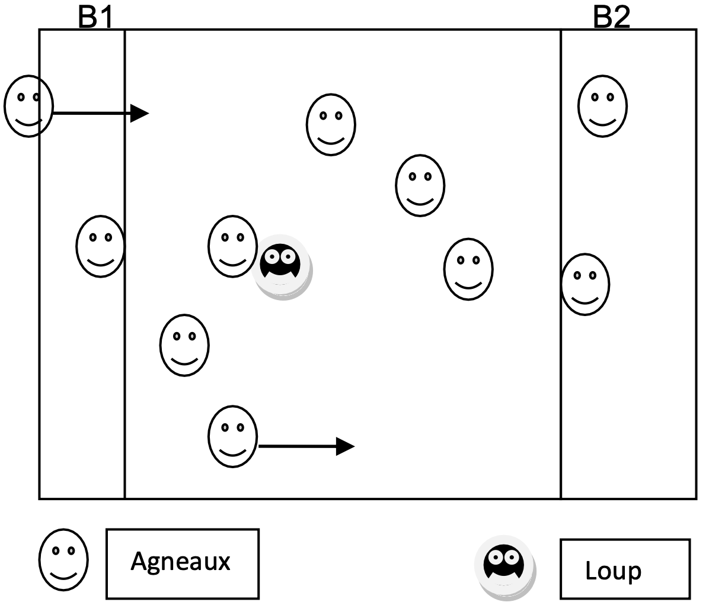

Objectif d'apprentissage
Réalisation d'actions individuelles simples dans un espace orienté avec une opposition. Accepter les premières règles communes.
But
Pour les agneaux : éviter de se faire toucher par le loup.
Pour le loup : toucher les agneaux.
Critères de réussite
- Le joueur gagnant est celui qui a touché le plus d'agneaux lorsqu'il était le loup.
Règles
- Les agneaux sont dans la bergerie. Au signal du loup, ils doivent traverser la zone de jeu pour se rendre à l'autre bergerie sans se faire toucher.
- Toutes les minutes, les rôles changent, un agneau devient le loup.
Organisation
Terrain de 15m x 15m comprenant deux zones symbolisant les bergeries.
Modalités d'exécution
- Courir vite pour ne pas se faire attraper.
Évolutions
- L'enseignant prend le rôle du loup.
- Diminution des dimensions du terrain.
- Augmentation du nombre de loups.